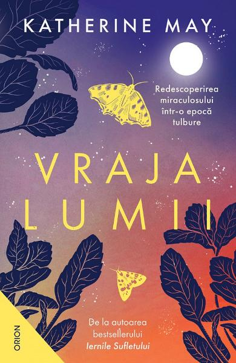

Vraja lumii. Redescoperirea miraculosului intr-o epoca tulbure
Katherine May
Multi dintre noi suntem coplesiti de schimbarile care ne asalteaza in fiecare zi. Ne simtim obositi si iritati, de multe ori fara sa stim de ce. Fundalul vietii noastre este dominat de o teama apasatoare si de o neliniste epuizanta. Oare exista un mod de a ne raporta la lumea din jur care sa ne ajute sa fim mai relaxati si mai increzatori in viitor? Cum ne putem recupera curiozitatea, bucuria de a trai si fascinatia fata de frumusetea lumii?